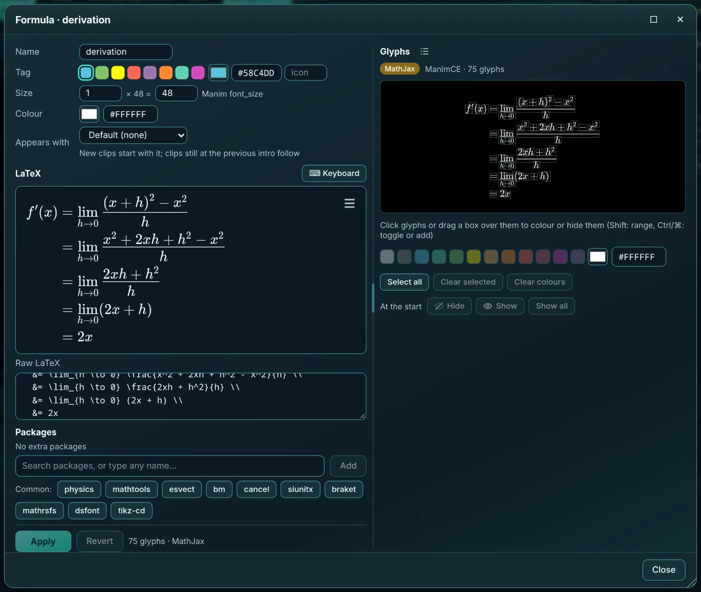
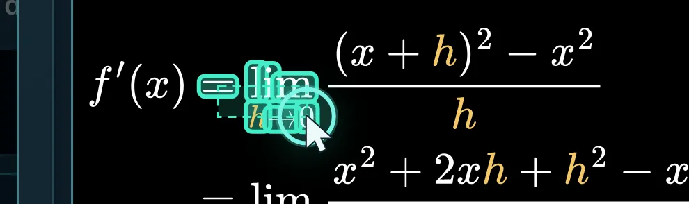
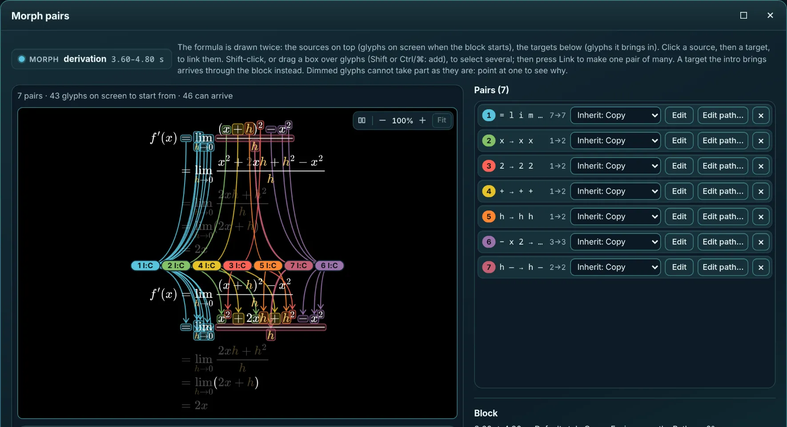
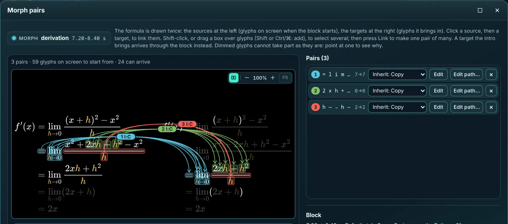
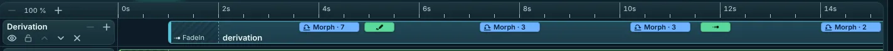

A derivative from first principles
Derive the derivative of x² from the limit definition as a derivation that writes itself, line by line. One formula holds all five rows, Morph blocks grow each row out of the one above, and the result lights up at the end.
What you will make
A title, f(x) = x², and a derivation of five rows. The first row is the
definition of the derivative, applied to x². The next three appear one after another,
each copied out of the row above: the square is expanded, the terms that cancel are left behind,
and the common h is divided out. The last row is the answer, 2x, and it
swells in a flash of colour. Every h is gold, so the eye can follow the variable that
goes to zero.
You will use a Morph block four times, an Appear block twice, two more blocks for the finish, and the pair editor to link glyphs by groups. It is a long tutorial: the steps are the same for each row, so the first block is the one to take slowly.
Before you start
- You can write a formula and put it on the timeline: Writing formulas and Working with the timeline.
- You have read Morph blocks, which explains the pair editor. This tutorial uses it without stopping to explain.
- No companion is needed. The glyph numbers of this project are those of the browser's own rendering (MathJax); you link by clicking glyphs, so you never type them.
The finished project is below. To compare as you go, download it, choose File ▸ Open…, press Other file… and pick the file (Projects explains the dialog).
Step by step
1. Write the derivation
Press + New in the Creator and give the formula the name
derivation. In the Raw LaTeX field type the five rows, then press
Apply. Manim sets every formula in an aligned environment, so the & before
each = lines the equals signs up and \\ ends a row:
f'(x) &= \lim_{h \to 0} \frac{(x+h)^2 - x^2}{h} \\
&= \lim_{h \to 0} \frac{x^2 + 2xh + h^2 - x^2}{h} \\
&= \lim_{h \to 0} \frac{2xh + h^2}{h} \\
&= \lim_{h \to 0} (2x + h) \\
&= 2x
Choose FadeIn in the Appears with menu: new clips of this
formula start with that intro. Then add a second formula, title, with the source
f(x) = x^2, and in its Size row type 72 in the second box, the one
that shows Manim's font_size.
2. Put them on the timeline
Right-click each formula and choose Add to the timeline, derivation
first. A new clip goes on the top track, Track 2, at the playhead, and a track holds one
clip at a time: the second clip lands on the same track, right after the first. So open the
Timing tab of the title clip and choose Track 1 in its
Track list first: Start and End stop at the
neighbour on the same track. Then set the times and the place of both clips:
| Clip | Track | Start | End | Initial state | Intro · Outro |
|---|---|---|---|---|---|
title | Track 1 | 0 | 21.4 | X −4.6 · Y 3.3 | Write 1 s · FadeOut 1 s |
derivation | Track 2 | 1 | 21.4 | X 0 · Y −0.2 · Scale 1.2 | FadeIn 1 s · FadeOut 1 s |
A dropped clip is three seconds long, so the End field (or the right edge of the clip) is the first thing to change: the blocks below need room until about 18 seconds. The finished project calls its two tracks Derivation and Title; the names of a new project's tracks do not matter.
3. The first Morph block: row 1 into row 2
Put the playhead at 3.6 s, right-click the derivation clip and choose Morph within the formula.
With the block selected, press Edit pairs… in the Animations panel. The editor
draws the whole derivation twice, side by side: what can be a source at the left, what can arrive at
the right. You link a glyph of row 1 at the left to a glyph of row 2 at the right. (The playhead does
not have to be exactly on 3.6 s: the Start field in the block's panel sets the
time.)
Suggest pairs by label is not the tool here. On this block it proposes
33 pairs at once, one for nearly every glyph that has a twin, and it picks the nearest twin in
reading order. This derivation repeats its symbols (x, h, 2,
brackets), so that twin is not always the glyph the algebra means. Link by groups instead. Drag
a box over a run of glyphs at the left, another over the matching run at the right,
and press Link: one pair for the whole run. For a glyph that goes to two places, click it, then
Shift-click both targets and press Link.

Seven links make the block. The first is the box you just saw.
| Sources (row 1) | Targets (row 2) | How |
|---|---|---|
= and lim h→0, seven glyphs | the same seven | a box on each side |
the x of (x + h) | the x of x² and the x of 2xh | click, then Shift-click both |
the exponent of (x + h)² | the exponents of x² and h² | click, then Shift-click both |
the + of (x + h) | both + of x² + 2xh + h² | click, then Shift-click both |
the h of (x + h) | the h of 2xh and the h of h² | click, then Shift-click both |
− x², three glyphs | the same three | a box on each side |
the h under the bar, and the bar | the same two | a box on each side |
The f′(x) and the brackets of (x + h) are not linked: they stay in row 1 and do
not appear in row 2. Press Save pairs.

4. The glyph no pair brings
Row 2 has one glyph that comes from nothing: the 2 of 2xh, the coefficient the
expansion creates. Put the playhead at 4.9 s, right-click the clip and choose Appear ▸ Write.
In the panel of the new block pick that glyph in the glyph view (it is the 2 in front of
the xh of the second row). Set its duration to 0.6 s.
5. The other rows
The same two moves, three more times. Add each block where the table says; link with boxes and Shift-clicks as before. In the editor of a later block the glyphs of the rows already on screen are dimmed as targets and the later rows are free: that is how you know you are on the right row.

| Start | Block | Links (sources → targets) |
|---|---|---|
| 7.2 s | Morph, row 2 into row 3 | = lim h→0 → the same (box on each side) · the numerator 2xh + h² (six glyphs) → the numerator of row 3 · the h under the bar and the bar → the same |
| 10.2 s | Morph, row 3 into row 4 | = lim h→0 → the same · 2x of the numerator → the 2x of row 4 · + h of the numerator → the + h of row 4 |
| 11.6 s | Appear ▸ FadeIn, 0.6 s | the two brackets of row 4 |
| 14 s | Morph, row 4 into row 5 | the = → the = · 2x in the brackets → the 2x of row 5 |
Look at what stays unlinked. In row 2 the terms x² and − x² cancel, so they are not carried
into row 3. In row 3 the h of 2xh and the h under the bar cancel, so row 4 starts from
2x + h. The derivation shows the algebra by what it leaves behind.
6. Colour the h
In the formula editor, in the Glyphs view on the right, pick the thirteen h of the
derivation (Ctrl-click each, or drag a box over several) and give them
one colour; the project uses gold (#F4C867). A colour belongs to a glyph, and Morph copies keep it, so every row
inherits it. Match colors does the same job in one step for every
h at once: see Match colors.
7. The finish
The answer should arrive with some noise. At 16 s add a Transform ▸
Part of the formula block, pick the 2x of the last row, set its
Scale to 1.3, tick Set colour and choose a teal. At 17.2 s add an
Emphasis ▸ Indicate block on the same two glyphs. Indicate swells them
and turns them yellow for a moment, then lets them go back.

8. Play it and export
Press Space and watch the derivation write itself. Fix timings by dragging blocks, as in the timeline page. When you are happy, Export ▸ Python — ManimCE… or Export ▸ Python — ManimGL… writes the scene (see Exporting).
The result
This is the scene as ManimCE renders it from the Python the editor exports, at 480p:
And the exported Python, for both libraries. Each Morph block is one self.play(…) with an
animation for each pair; a pair of groups is one ReplacementTransform of copies of the
glyphs. The first block starts like this:
self.play(
ReplacementTransform(VGroup(*derivation_g[5:12]).copy(), VGroup(*derivation_g[23:30])),
ReplacementTransform(VGroup(derivation_g[13]).copy(), VGroup(derivation_g[30], derivation_g[34])),
…
run_time=1.2,
)The helper at the top of the file matches the editor's glyphs to Manim's by position.
Where to go next
- Give a pair a path of its own: select a Morph pair, press Edit path…, and see Custom paths.
- Change the style of a link: Transform takes the glyph out of its row, and Fade transform fades it. The block's settings compares them.
- Move a single term across an equals sign, or cancel a factor, with the recipes.